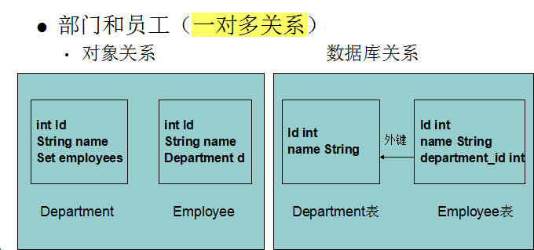

- 不管java的对象存在何种关系，反映到关系型数据库中，都是使用外键表示纪录（即对象）的关联关系。
- 设计java对象如涉及到多个对象相互引用，要尽量避免使用一对多，或多对多关系，而应使用多对一描述对象之间的关系(或使用延迟加载的方式)。
一、一对多关系


#主表：一对多有主从关系
create table department(
id int primary key,
name varchar(100)
);
create table employee(
id int primary key,
name varchar(100),
salary float(8,2),
depart_id int,
constraint depart_id_fk foreign key (depart_id) references department(id)
);


二、多对多关系

create table teacher(
id int primary key,
name varchar(100),
salary float(8,2)
);
create table student(
id int primary key,
name varchar(100),
grade varchar(100)
);
create table teacher_student(
t_id int,
s_id int,
primary key(t_id,s_id),
constraint t_id_fk foreign key (t_id) references teacher(id),
constraint s_id_fk foreign key (s_id) references student(id)
);